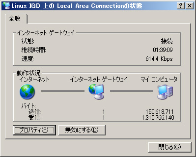
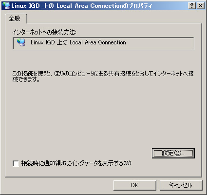
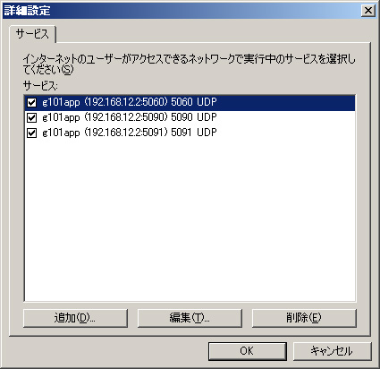
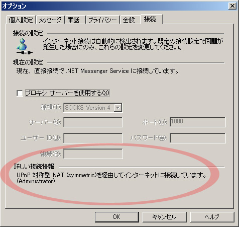

X Window System用のデスクトップマスコット（ウィンドウシッター）「mindfocus」のページはこちらにあります。
Linux IGDを用いてNetBSDマシンをUPnP対応ルータにする方法のメモです。
Linux IGDはPOSIX Threadを用いるので、なんらかのPOSIX Threadの実装が必要になります。今回はパッケージにもなっていてインストールが簡単なgnu pthreadを使いました。
% cd /usr/pkgsrc/devel/pth % sudo make install
だいたいこんな感じです。pkgがよくわからないって人はどこかで勉強しましょう:)
このライブラリはext2fs関係のソフトウェアの一部として入手できます。後から調べたら、これもpkgでインストール可能でした（pkg/sysutils/e2fsprogs）が、ここでは自力で/usr/localにインストールします。
まずはe2fsprogsのサイトからe2fsprogs-1.35.tar.gzを入手します。
% cd $work % tar zxvf $archive/e2fsprogs-1.35.tar.gz % cd e2fsprogs-1.35 % ./configure % cd lib/uuid % make % sudo make install
configureをトップからかけて、ここではuuidだけをコンパイル・インストールしています。ひょっとしたら全体でコンパイルが通るのかもしれませんが、今回はuuidだけが必要だったので試してません。
UPnP周りの実装がなされたライブラリです。IBM製のコードがベースになっているようですが、ソースはあまり綺麗じゃありません。バージョン毎にAPIが結構違うようで、下記のLinux IGDがこちらのバージョンを選びますので、最新が欲しいという気持を抑えて、とりあえず1.0.4を取ってきましょう。サイトのほうはこちらになります。
また、このライブラリはPOSIX Threadを必要としますので、上記のgnu pthreadに合わせるためにMakefileをガリガリ書き換える必要があります。サブディレクトリのmakeに変数引き継いでくれないし、この辺がダサいです。
まぁ、文句言っても仕方ないのでパッチをまとめてありますので、これを使ってみてください。
% cd $work % tar zxvf $archive/upnpsdk-1.0.4.tar.gz % cd upnpsdk-1.0.4 % patch -p1 < $archive/upnpsdk-1.0.4.nb.diff % make % sudo make install
インストール後には/usr/local/lib/libupnp.soや/usr/local/include/upnpができます。
最後の本体になります。こちらからlinuxigd-0.92.tgzを入手しましょう。これもパッチを用意しました。当初は内部で呼びだしているiptablesをシェルスクリプトでフックしていたんですが、今回はFreeBSDでの実装を参考に内部で直接ipfを呼び出すように修正しました。
% cd $work % tar zxvf $archive/linuxigd-0.92.tgz % cd linux-igd % patch -p1 < $archive/linux-igd.nb.diff % make % sudo make install
/usr/local/etc/linuxigdに設定ファイル、/usr/local/bin/upnpdにdaemon本体ができます。
% sudo /sbin/route add -net 239.0.0.0 -netmask 255.0.0.0 <int addr> % sudo /usr/local/bin/upnpd <ext if> <int if>
<int addr>,<int if>,<ext if>については、それぞれイントラ側のアドレス、インターフェース、インターネット側のインターフェースを各自の環境に合わせて指定します。うちの場合だとこんな感じになります。
% sudo /sbin/route add -net 239.0.0.0 -netmask 255.0.0.0 192.168.12.1 % sudo /usr/local/bin/upnpd pppoe0 rtk0
イントラ内のクライアントマシンからLinux IGDデバイスが見えるか確認します。UPnPに対応したWindows XPの場合には、ネットワーク接続内に「Linux IGD 上の Local Area Connection」というアイコンが現われます。
 アイコンを開くと左図のようなダイアログが現われます。
 プロパティの内容はこんな感じです。
 設定の中身はこのようになっています。うちの場合はIP電話が接続されているのでこのように3つの項目が出ていますが、何も接続していなければ当然何も表示されないはずです。
 現状、UPnPの動作確認に使えるアプリケーションと言えばWindows MessengerまたはMSN Messengerになると思います。接続情報でこのような表示になっていれば勝利です。
ここまで動作すれば、あとは自動起動するようにrc.localに記述するだけです。うちでは次のような行を追加しています。
if [ -x /usr/local/bin/upnpd ]; then
echo -n 'starting linuxigd (UPnP daemon):'
/sbin/route add -net 239.0.0.0 -netmask 255.0.0.0 192.168.12.1
/usr/local/bin/upnpd pppoe0 rtk0
echo '.'
fi